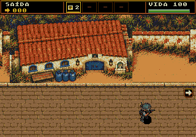
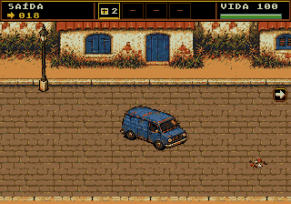
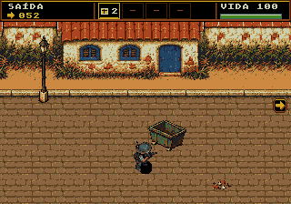
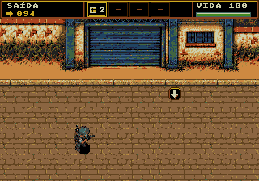
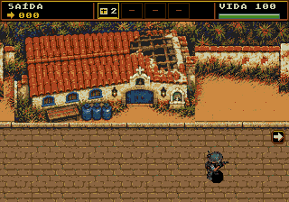
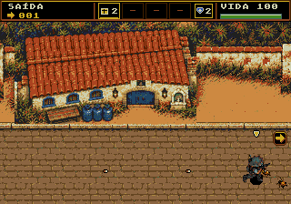
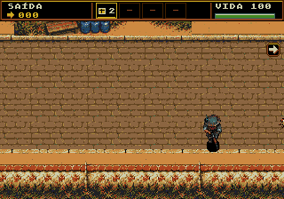
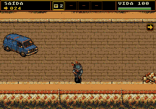
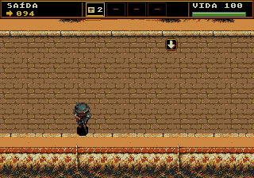

Fase 3 · Igreja → rua → galpão
Implementação nativa de 2560 × 320 pixels: início com a igreja original, três repetições da rua e chegada ao galpão. Carros, postes, caçamba, caixas e entulho compõem o cenário; as bases de 13 obstáculos têm colisão.
Para jogar: Fase Teste → Campanha → fase 3. A igreja muda conforme a consequência da bomba nas fases anteriores.
VRAM do cenário: 20 KiB fixos16 cores do cenário originalObjetivo: chegar ao galpão
Cenário inteiro exportado para a ROM
Arraste a barra horizontal para examinar os cinco módulos em escala 2×. A faixa de vegetação usa pequenas repetições para respeitar a reserva de tiles; as construções e os objetos mantêm seus pixels.
Abrir imagem inteira
Capturas reais do emulador
Ver a correção do limite inferior
Imagens da ROM de produção em Genesis Plus GX. As capturas de composição isolam o combate; os relatórios identificam separadamente o percurso por controle, o combate nativo e a carga artificial nos limites da fase.

Entrada com a igreja inteira.

Rua, carro e poste.

Variação dos obstáculos na mesma base.

Chegada ao galpão.

Consequência persistente da bomba.

Ensaio de carga com os limites autorais.
Limite inferior da rua
A câmera acompanha a aproximação ao sul até mostrar o final da imagem, incluindo o muro e a vegetação de limite. A área caminhável termina antes do meio-fio; a decoração inferior permanece visível e não pode ser atravessada.

Início da rua: limite inferior completo.

Rua: Damião para antes do meio-fio.

Galpão: a decoração também aparece fora da área caminhável.
Validação da entrega
Carregando resultados da ROM…
Testes em emulador. Não houve ensaio em console físico nem avaliação humana de dificuldade. As demais fases preservam suas fontes de cenário.